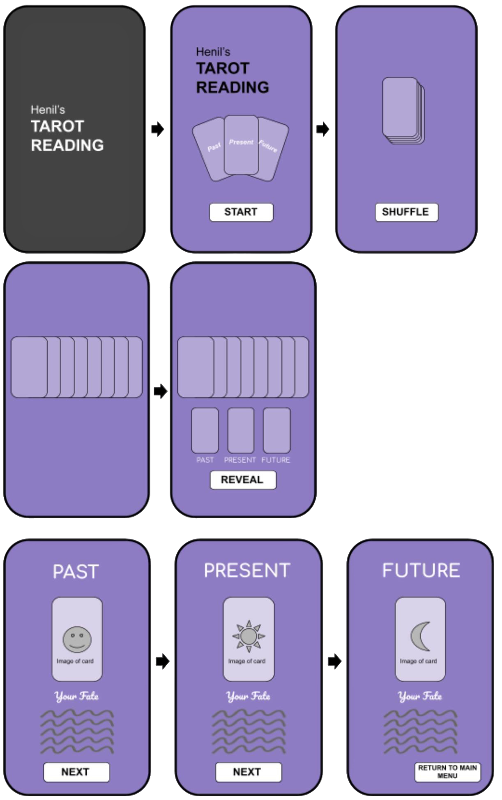

tarot-demo.mp4
APP DEMO
Overview
A native Android app that lets users explore a full tarot deck, offer insight on the users' past, present, and future, and draw spreads with fluid, tactile UI. I focused on clean XML layouts, fun animations for the cards, and a OOP-based deck model that’s easy to extend with new cards or metadata.
Core features
- Scrollable card library with smooth card animations for shuffling and spread.
- Sort and filter by suit/arcana
- Tap a card to open a detail screen with upright/reversed meanings.
Architecture & implementation
RecyclerView+ViewHolderfor efficient card grids and smooth scrolling.Glidefor image loading/caching to keep memory usage low and UI responsive.- Deck modeled as Java classes (card, suit, meanings) for testable, modular logic.
- XML layouts with drawable resources for consistent spacing, typography, and states.
- Built and tested against modern emulators (API 33) to validate layout and performance.
Design IPO
